ReactiveX
ReactiveX
Комбинация лучших идей взятых из паттернов Observer, Iterator и функционального программирования
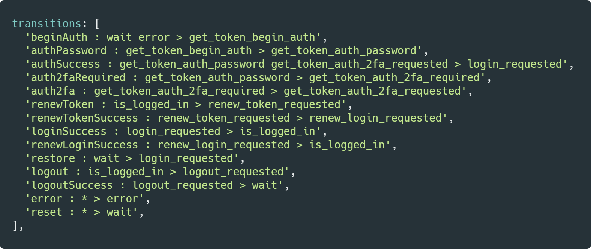
Комбинация лучших идей взятых из паттернов Observer, Iterator и функционального программирования
| Single items | Multiple items | |
| Синхронно | T getData() |
Iterable<T> getData() |
| Асинхронно | Future<T> getData() |
Observable<T> getData() |
или Наблюдатель от банды 4-х
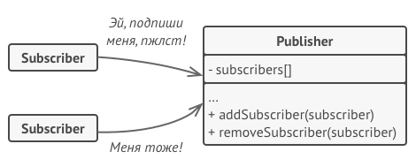
Это такой паттерн который позволяет последовательно обходить структуры данных.
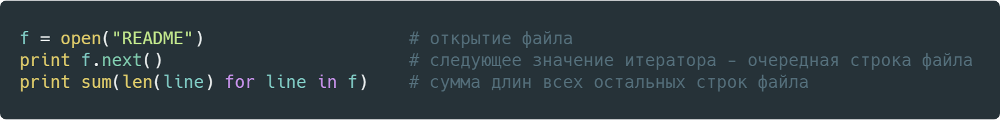
Все операции которые можно делать на Итератором можно делать и над Observable
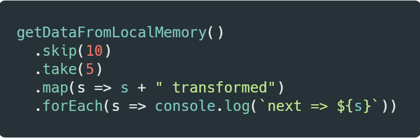
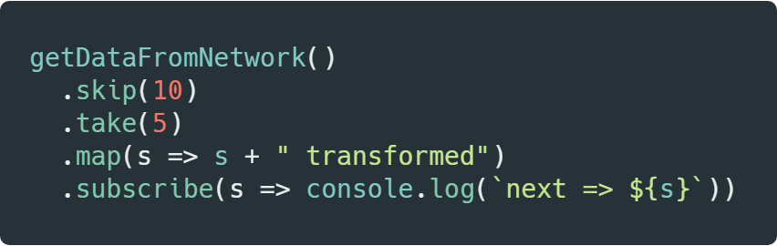
Observer подписывается на оповещения Observable
Observable оповещает всех своих Observer-ов
IObserver {
onNext(value);
onError(error);
onCompleted();
}
IObservable {
subscribe(IObserver observer);
}
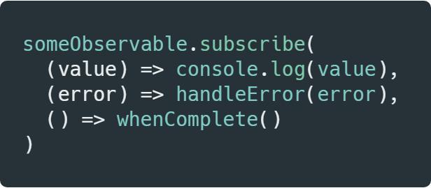
ISubject implements IObserver, IObservable {
}
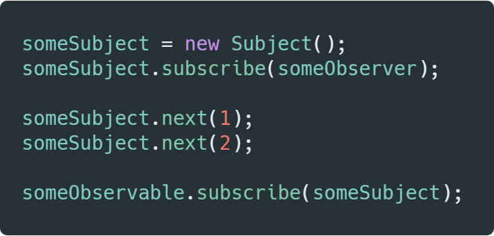
const searchUsers$ = fromEvent(document.querySelector("#search"), "change")
.pipe(
map(event => event.target.value),
debounceTime(400),
distinctUntilChanged(),
switchMap(search => getJson(`/users/?q=${search}`))
);
searchUsers$.subscribe(drawUsers);
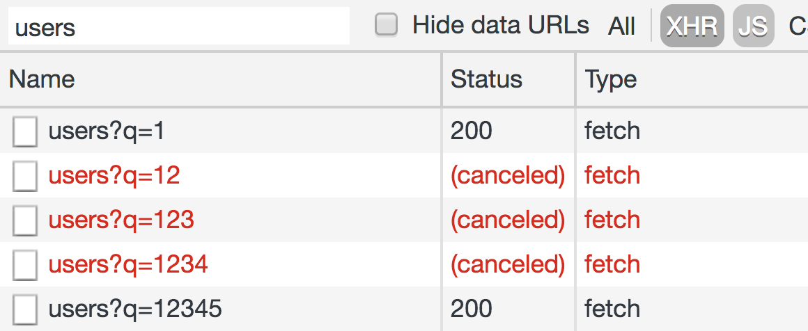
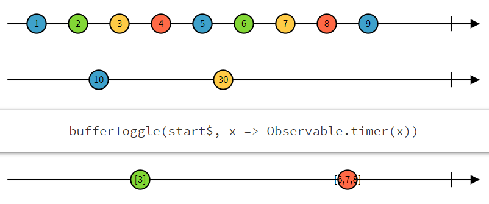
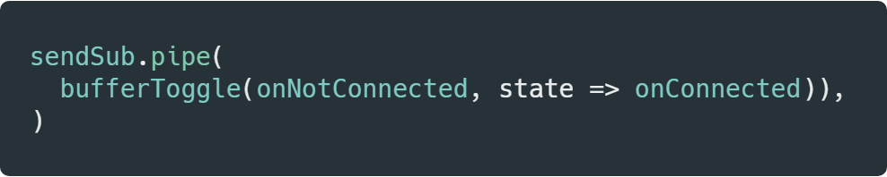

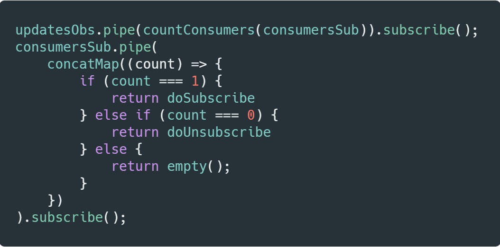